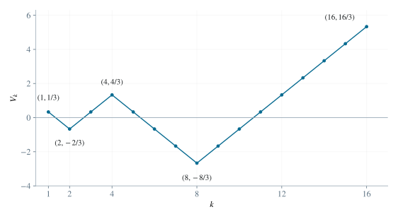
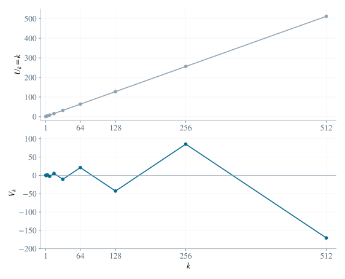

2.1 将等比子列的相邻差记为整数
取任一符合条件的十项子列，记 bt=ait（1≤t≤10），以及 dt=bt+1−bt（1≤t≤9）。由 bt=b1qt−1 得：
dt=b1(q−1)qt−1,dtdt+1=q(1≤t≤8). （1）因为 b1=0、q=0,1，所以每个 dt 均非零。另一方面，两个子列项之间的差可以逐项求和：
dt=ait+1−ait=k=it∑it+1−1(ak+1−ak). （2）设第 t 段共有 N=it+1−it 步，其中 p 步增加 1，其余 N−p 步减少 1。这段的净变化为 p−(N−p)=2p−N，因此是整数；又因 dt=0，它是非零整数。由 0≤p≤N 得 −N≤2p−N≤N，故：
∣dt∣≤it+1−it. （3）2.2 证明公比有理并归约到绝对值大于一
由 q=d2/d1 且 d1,d2 为非零整数，公比为有理数。写成既约形式 q=s/r，其中 r 为正整数，s 为非零整数，gcd(r,s)=1。
若 ∣q∣<1，把整个数列反序。相邻差的绝对值仍为 1，十项子列也随之倒序，公比变为 1/q，其绝对值大于 1。反序不改变长度，且反序两次恢复原数列。因此证明长度下界时可先设 ∣q∣>1，即 ∣s∣>r≥1，从而 ∣s∣≥2。
2.3 用互素性控制每一段长度
由 dt=d1(s/r)t−1 可得：
rt−1dt=st−1d1(1≤t≤9). （4）式（4）右侧被 st−1 整除，所以左侧 rt−1dt 也被它整除。既约性给出 gcd(rt−1,st−1)=1，于是可从整除关系中消去与除数互素的 rt−1，得 st−1∣dt。具体地，可以写 dt=htst−1，其中 ht 是非零整数，所以 ∣dt∣=∣ht∣∣s∣t−1≥∣s∣t−1。再由 ∣s∣≥2 及式（3），得到：
it+1−it≥∣dt∣≥∣s∣t−1≥2t−1. （5）这里用到的整除性质是：若 gcd(A,B)=1 且 A∣BD，则 A∣D。例如由裴蜀等式 uA+vB=1 乘以 D，右侧 D=uAD+vBD 的两项都被 A 整除，即得结论。
2.4 求长度下界并构造达到下界的数列
九段间隔的长度相加，并使用 i1≥1、i10≤m：
m≥i10=i1+t=1∑9(it+1−it)≥1+t=1∑92t−1=1+(29−1)=512. （6）取数列 ak=k（1≤k≤512）。它的相邻差均为 1，下标为 1,2,4,8,…,512 的十项组成公比为 2 的等比数列。因此长度 512 确实能够达到，故：
m0=512. （7）2.5 逐一提取最短情形的等号条件
现在设 m=512，并先研究存在 ∣q∣>1 的十项子列的情形。上述链式不等式的首尾都为 512，所以中间的每个不等式均须取等号。首先 i1=1、i10=512。又因幂和随正整数 ∣s∣≥2 严格递增，须有 ∣s∣=2；由 ∣s∣>r≥1 得 r=1。因此：
q∈{2,−2},∣dt∣=it+1−it=2t−1. （8）若某一段长度严格大于 2t−1，其他段即使全取下界，总长度仍会大于 512。因此九段必须分别达到自己的下界。首下标已经为 1，以后各下标由递推 it+1=it+2t−1 唯一确定：
it=1+j=1∑t−12j−1=2t−1(1≤t≤10). （9）此外，每段都是若干个 ±1 的和，而其和的绝对值等于项数。如果同时出现正、负两种符号，绝对值必严格小于项数。因此每一段 ait,…,ait+1 必须逐项都增加 1，或者逐项都减少 1，方向由两端点的大小关系唯一决定。
2.6 确定首项与整个数列
由 i1=1,i2=2，有 a2=qa1，而相邻差绝对值为一，故：
∣(q−1)a1∣=1,⎩⎨⎧a1=±1,a1=±31,q=2,q=−2. （10）一旦 q,a1 确定，十个端点 a2j=a1qj（0≤j≤9）全部确定；第五步又唯一确定相邻端点之间的每一项，故最多只有四个这类数列。为明确给出它们，记 Uk=k。再定义数列 V：
Vk=3(−2)j+(−1)j+1(k−2j),2j≤k≤2j+1,j=0,…,8. （11）这条分段公式来自两端点之间的单位斜率插值。当首项为 1/3、公比为 −2 时，第 j 段起点值为 (−2)j/3，终点与起点的差为 [(−2)j+1−(−2)j]/3=−(−2)j=(−1)j+12j。该段长度为 2j，所以每一步必须增加 (−1)j+1，恰得式（11）。
在共同端点 k=2j+1，前一段的值为 (−1)j2j/3+(−1)j+12j=(−1)j+12j+1/3=(−2)j+1/3，与后一段起点一致。因此四个候选数列是 U,−U,V,−V。

图 1. 数列 V 的前十六项。标出的幂次下标项组成公比 −2 的等比子列，相邻各项的差为 ±1。
2.7 逐个验证四个构造
对 U、−U，相邻差分别恒为 1、−1；在下标 2j 处的值为 ±2j，公比为 2。对 V，每段斜率 (−1)j+1 为 ±1，相邻整数下标处的差绝对值为 1；端点连续保证跨段时也不例外。并且 V2j=(−2)j/3，公比为 −2。整体取负不改变这些性质，所以 −V 也满足条件。
因此四个候选都实际存在，而且其首项 1,−1,1/3,−1/3 互不相同。

图 2. 最短数列 U,V 的全部幂次端点。线段连接离散的数列项，九段长度依次为 1,2,4,…,256。
2.8 处理绝对值小于一的公比
定义反序算子 R：对长为 512 的数列 a，令 (Ra)k=a513−k。它的新相邻差为 (Ra)k+1−(Ra)k=a512−k−a513−k，是原来对应相邻差的相反数，因此绝对值仍为 1。原先递增下标 i1<⋯<i10 在新数列中对应递增下标 513−i10<⋯<513−i1，数值顺序变成 b10,…,b1。因为各项非零，相邻比为 bt/bt+1=1/q。最后，R(Ra)k=a513−(513−k)=ak，所以反序是一一对应。
任意最短数列的见证公比满足 ∣q∣>1 或 ∣q∣<1。前一种情况已在 U,−U,V,−V 中；后一种情况反序后落入这四者，故原数列必在 RU,−RU,RV,−RV 中。由反序的可逆性，这四个也都存在，见证公比分别为 1/2 或 −1/2。
2.9 排除重合并给出最终个数
前四个数列的首项为 1,−1,1/3,−1/3。因为 U512=512、V512=(−2)9/3=−512/3，后四个数列的首项依次为：
512,−512,−3512,3512. （12）八个首项全部不同，故八个数列两两不同。上面的等号分析与反序分类又表明没有遗漏，因而：
m0=512,不同的最短有趣数列共有 8 个. （13）这里计数的对象是完整数列，而不是等比子列的选择方式；同一数列即使有多个符合条件的子列，也只计一次。